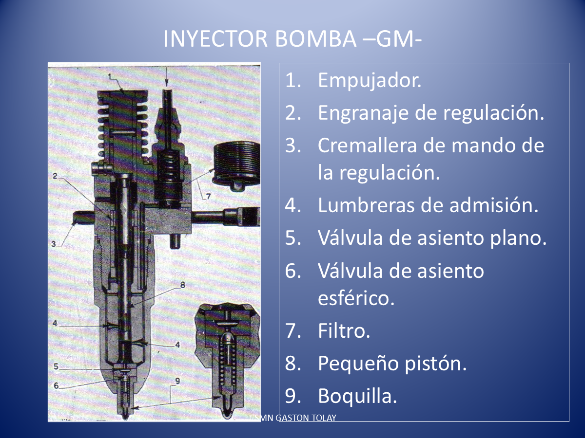

MOTORES · SISTEMAS DE COMBUSTIBLE
La inyección, pieza por pieza.
Giralo, seguí el combustible y separá sus componentes.
MODELOS DISPONIBLES
La forma y la posición del motor añadido son didácticas. La imagen documenta el sistema de inyección de referencia.
Doble clic en una pieza o su nombre para ocultarla. Para recuperarla, pulsá su nombre en la lista de la derecha.
Motor diésel 2T · barrido uniflujo. Admisión de aire por lumbreras y escape por válvulas en la culata. Pistones, bielas y contrapesos se mueven con el cigüeñal; cada inyector entrega cerca del PMS de su cilindro. «Motor + Corte» retira una mitad de las carcasas para ver el ciclo. Por defecto se observa desde el lado opuesto a las bombas; «Lado del Corte de Motor» invierte el corte y la cámara. Distribución y geometría ilustrativas, sin escala: no son el reglaje del equipo de la diapositiva. Referencia del principio de barrido 2T.
Animación didáctica ralentizada. Los colores indican el recorrido, no valores de presión.
Comparar con la diapositiva original y consultar el alcance
Del esquema al modelo

Geometría conceptual sin escala: carcasas, recorridos y movimientos simplificados para estudiar. El despiece separa conjuntos y elementos internos; no es una secuencia de mantenimiento.
Abrir presentación N9 de Tolay ↗